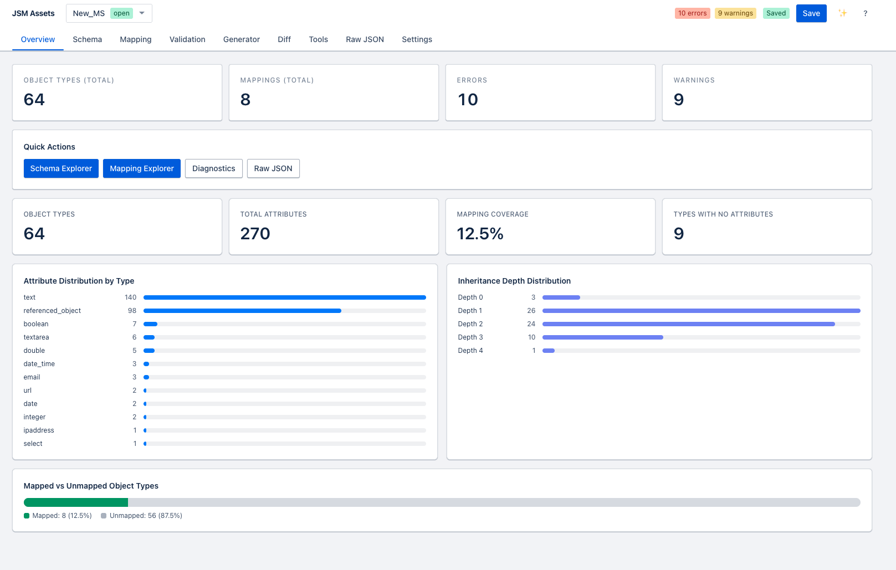
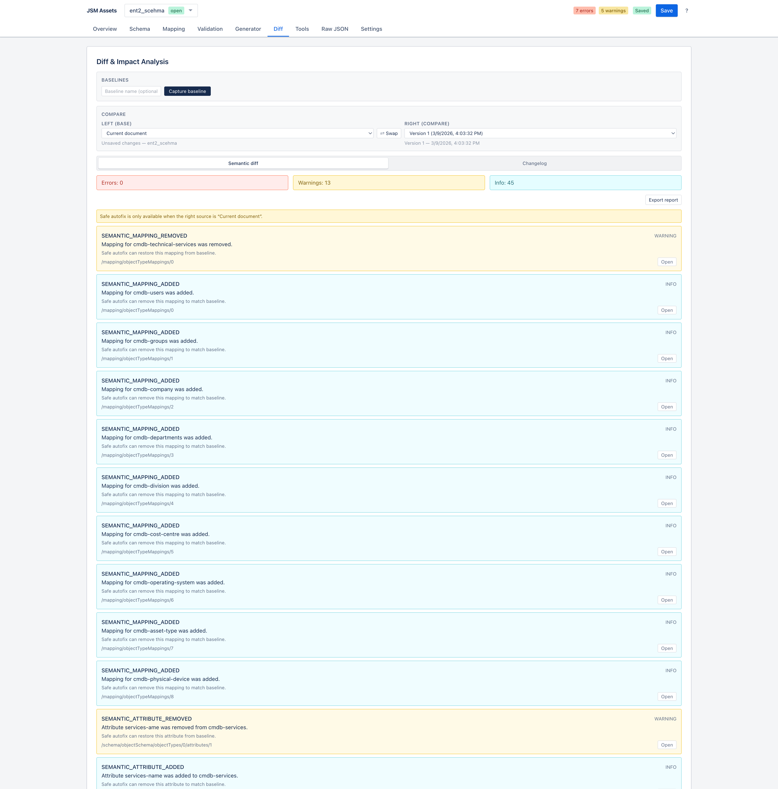
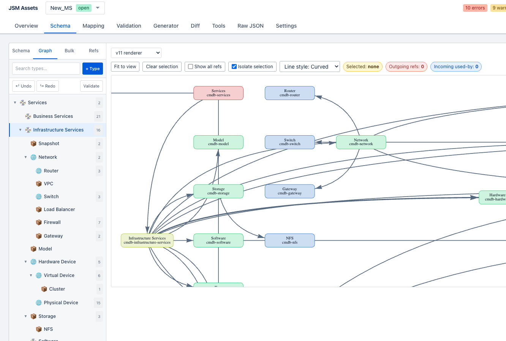
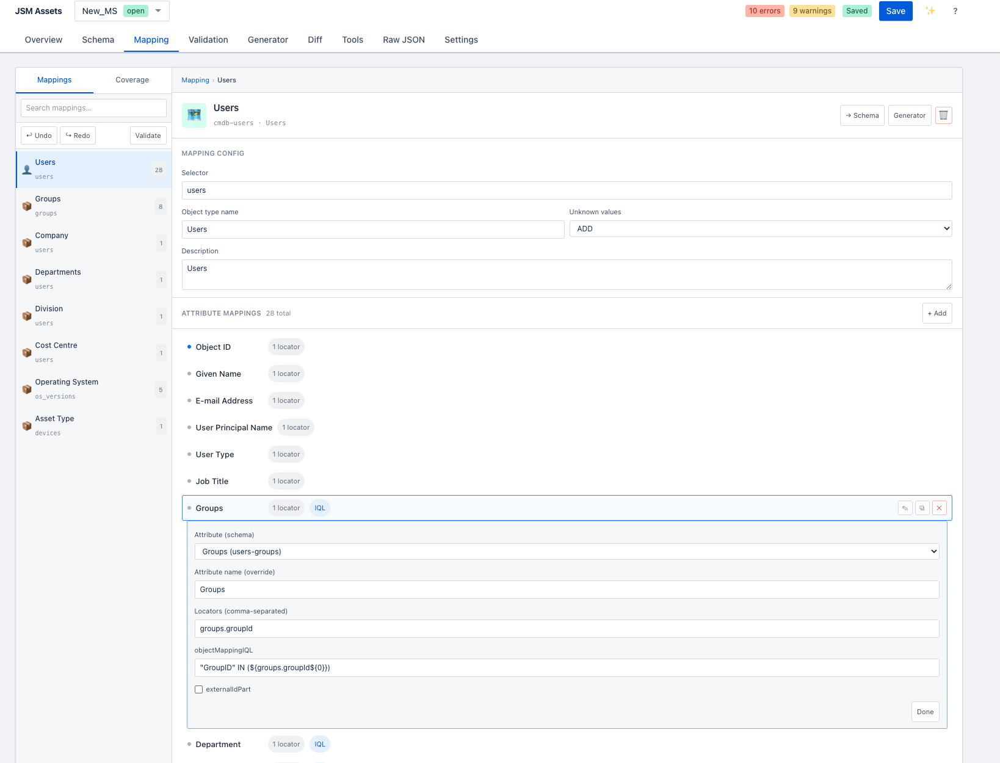
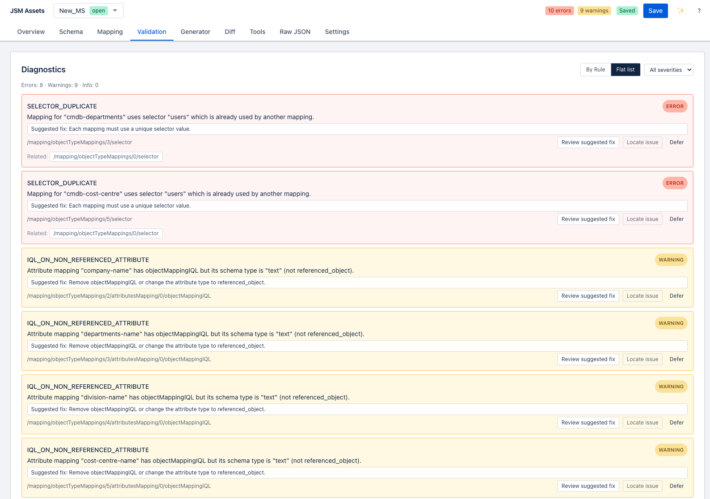
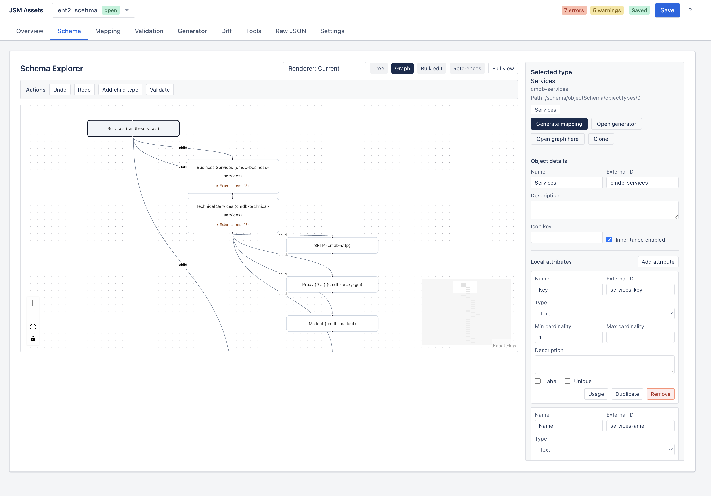
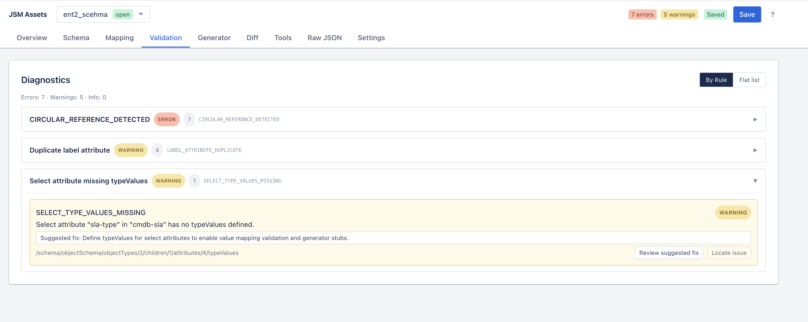

User guide
Detailed feature documentation
This page documents the implemented product surface in detail. It is intended to be useful for
onboarding, release notes, QA validation, and contributor understanding of how the application
behaves from the user’s perspective.
What the application manages
- A combined
AssetsImportDocument containing schema and mapping data.
- Disk-backed projects with versions, baselines, activity, environments, and staged deletions.
- Atlassian-facing operational workflows for import, push, compare, export, cleanup, and icon sync.
Typical workflow
- Create or load a project.
- Import from JSM or load raw JSON.
- Inspect object types and mappings visually.
- Resolve diagnostics and save a baseline.
- Make edits, compare against baseline or remote, then push or export.
Workspace layer
Projects
Projects are the unit of persistence and collaboration. A project stores the working document plus all
supporting state required for day-to-day schema operations.
What a project stores
- Current
AssetsImportDocument.
- Version snapshots and baseline snapshots.
- Activity log entries.
- Validation rule configuration.
- Atlassian connection settings and named environments.
- Sharing metadata and staged deletions.
Creating and opening projects
- Projects can be created from scratch from the project workspace.
- Tools can also create a new project directly from an imported remote schema.
- The last active disk project can be restored automatically on refresh.
Save, versions, and restore
- Manual save writes the current project payload to the server.
- Auto-save runs after a period of inactivity when the project is dirty.
- Versions are restore points; baselines are comparison anchors for diff.
- Undo and redo are local document history operations and separate from saved versions.
Sharing and visibility
- Projects are private by default.
- Owners can mark a project Global or share it with specific users by email.
- Owners can revoke Global access or revoke individual users.
- Badges communicate Global, Shared with me, and Shared with N.
Status and export
- Projects can be open, closed, or archived.
- Project export returns the effective document, not the raw staged state.
Important implementation note
Current permission logic allows explicitly shared users to save changes. Owners still retain admin-only actions such as deleting and managing sharing.
Dashboard view
Overview dashboard
The Overview view is the landing page for an open project. It summarizes current document health and
acts as a quick-launch surface for the main editing areas.
- Top counters for object types, mappings, errors, and warnings.
- Quick actions to jump to schema, mapping, validation, and raw JSON.
- Embedded Stats Dashboard with attribute distribution, inheritance depth, and mapping coverage.

Overview dashboard
Entry point for project health and navigation into detailed editing surfaces.
Schema workbench
Schema Explorer
The Schema Explorer is the main visual editing and navigation surface for the object schema.
It combines hierarchy browsing, detailed editing, graph navigation, staged deletions, and supporting utilities.
Tree view
- Shows the object type hierarchy with nested children.
- Supports collapse and expand across the tree.
- Shows object type state such as mapping presence, diagnostics, and staging.
- Selected object types sync with focused JSON locations when the raw editor or diagnostics point at them.
Detail panel
- Edit object type name and metadata.
- Inspect lineage and parent information.
- Add, edit, duplicate, remove, and move attributes.
- Stage a type for deletion or restore it if already staged.
- Clone an object type or generate a mapping for it when missing.
Graph and reference views
- The hierarchy graph visualizes the object type tree as connected nodes and edges, which is useful when nested structure is too dense to reason about in the tree alone.
- Graph mode is accessed from the Schema view, where users can switch between the standard tree and graph-based exploration.
- The graph highlights structural relationships rather than raw JSON order, so it is better suited for understanding parent-child topology.
- A separate reference graph visualizes
referenced_object links between types, which helps identify cross-object dependency chains before deployment.
- An alternate V11 renderer exists for graph rendering tradeoffs and can be useful for larger or more complex schemas.
When to use graph view
- When the tree becomes too deep or visually noisy to follow inheritance structure comfortably.
- When reviewing the overall object model with stakeholders who think in relationships rather than JSON hierarchy.
- When checking whether a subtree reorganization has preserved the intended topology.
Bulk and analysis tools in schema area
- Bulk Add Attributes applies a shared attribute definition to multiple types.
- Move Attributes supports relocating attributes between object types.
- Attribute Usage and stats help understand coverage and shape across the schema.
Staged deletions
- Stage marks a type and all descendants for soft removal.
- Staged items are excluded from effective validation and export.
- Footer actions allow restore all or commit staged deletions.
- Commit permanently rewrites the current document but remains undoable immediately in history.

Schema Explorer
Primary surface for object type navigation, editing, staging, and graph-driven understanding.

Schema Graph view
Hierarchy graph mode with in/out highlighting for understanding object type topology and large-schema structure more quickly.
Mapping workbench
Mapping Explorer
Mapping Explorer is where source data extraction logic is reviewed and edited. It provides both a mapping list
and a coverage-oriented lens for completeness analysis.
Mappings tab
- Searches mappings by object type ID, object type name, or selector text.
- Selects one mapping at a time for detailed inspection and editing.
- Shows selector, object type info, unknown values behavior, and attribute mapping rows.
- Allows modifying locators, external ID participation, and reference resolution IQL.
- Supports deleting the selected mapping.
Coverage tab
- Orders types by lack of mapping and then by low coverage.
- Shows mapped versus unmapped attributes per object type.
- Lets users jump directly into the detail mapping editor from a coverage item.
Validation-related mapping concepts
- Dead mappings are mappings that point to object types missing from the schema.
- Unknown attribute references are flagged when attribute mappings target attributes that do not exist.
- Required unmapped attributes surface in validation and coverage workflows.

Mapping Explorer
Source selector logic, attribute mapping details, and completeness review in one workflow.
Quality and diagnostics
Validation
Validation combines parser feedback, structural feedback, cross-reference integrity, business rule enforcement,
and diff-derived findings into a single diagnostics experience.
Validation pipeline
| Stage |
Description |
| JSON parse |
Rejects malformed JSON before a document can be normalized. |
| Shape |
Checks top-level structure against the expected document shape using Zod-backed parsing. |
| Contract |
Validates required fields, enums, case-sensitive contract details, and cardinality rules. |
| Cross-reference |
Ensures mapping object type and attribute IDs point to real schema definitions. |
| Business rules |
Checks duplicates, missing labels, missing mappings, circular refs, inheritance conflicts, and similar quality issues. |
Diagnostic behavior
- Diagnostics include severity, stable code, message, JSON pointer path, optional related paths, and suggestions.
- Clicking a diagnostic can move the user to the relevant raw JSON location.
- Rule categories can be toggled in Settings.
- Some findings can be deferred or safe-autofixed.
- When a baseline exists, impact and semantic findings can also appear in the validation configuration model.

Validation
Layered diagnostics, actionable rule codes, and direct navigation into source data.
Mapping creation
Mapping Generator
The generator helps users create missing object type mappings more quickly by reducing repetitive mapping setup work.
- Targets only unmapped object types.
- Accepts selector input before generation.
- Can create attribute mapping suggestions heuristically from schema data.
- Can clone an existing mapping structure to accelerate similar object types.
- Shows a preview before insertion into the document.
Change review
Diff and changelog
The Diff area is built for reviewing change impact before deployment. It supports comparing the current working
document with saved versions, baselines, and live remote state.
Source selection
- Current working document.
- Saved versions.
- Baselines.
- Remote live document fetched from Atlassian.
Outputs
- Semantic diff findings such as added or removed object types, attributes, and mappings.
- Impact analysis for breaking, safe, and informational changes.
- Changelog narrative grouped by object type and exportable as Markdown.
- Machine-readable JSON report export.
Remote compare
- Uses an environment token or manually entered token.
- Fetches the current live schema and registers it as a comparison source.
- Useful for detecting drift between local work and production state.

Diff & Impact Analysis
Semantic diff with impact classification (breaking, safe, info) and changelog generation.
Direct JSON editing
Raw JSON Editor
The raw editor is the low-level editing fallback and synchronization bridge between direct JSON changes
and the rest of the visual application.
- Monaco editor with syntax highlighting, minimap, indent guides, and schema-aware completion.
Validate & Sync reparses the current text into application state.- Auto-validate keeps diagnostics refreshed while typing.
- Export JSON downloads the current effective document.
- Export Diagnostics downloads the current diagnostics list.
- When staged deletions are active, the editor shows the effective filtered document and is read-only.

Raw JSON Editor
Low-level document editing with sync back into the visual model.
Configuration
Settings
The Settings view holds per-project configuration for live integration and validation behavior.
Atlassian connection settings
- Atlassian site.
- Atlassian email.
- API token.
- Assets schema ID.
Environments
- Named push targets with bearer tokens.
- Used by Push to Environment and Compare with Remote.
- Editable, removable, and persisted with the project.
Validation settings
- Rules grouped by contract, business, cross-reference, impact, and semantic categories.
- Supports enable all, disable all, reset, and per-category mass toggles.
Navigation and productivity
Search, command palette, and shortcuts
The app supports keyboard-driven navigation and search so users can move through large schemas without relying only on the mouse.
Command palette
- Opened with
Cmd/Ctrl+K.
- Searches object types and attributes using the domain search index.
- Selecting a result moves the user to the schema view and focuses the matching location.
Global shortcuts
Cmd/Ctrl+S save project.Cmd/Ctrl+Shift+S save version.Cmd/Ctrl+Z undo.- Go To mode for switching views quickly.
? opens help.